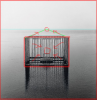

Bức tranh cho thấy cô gái đang rơi, nhưng ko biết dc cô gái sẽ ở trạng thái "rơi" mãi mãi như vậy, hay là sẽ chạm vào đất. Có ai biết dc ko? Nếu cho thêm một số dữ kiện như khoảng cách của cô gái tới mặt đất, đang ở Trái Đất hay hành tinh khác, có hố đen gần đấy ko..v.v. thì có thể kết luận dc cô gái sẽ tiếp đất trong khoảng thời gian bao lâu, hoặc tiếp tục rơi. Nhưng từ bức tranh trên thì chưa thể thấy gì nhiều. Bầu trời có nhiều sao, hay là bụi vũ trụ, cũng chưa biết dc gì mấy... Xã hội này giờ cũng giống bức tranh trên, ngày càng phức tạp đến mức ko thể thấy dc gì nữa. Lý trí hay tình cảm, đúng sai yêu ghét cứ lẫn lộn. Người ta thường hay nói phải giữ lý trí, nhưng thực ra trong xã hội con người có nhiều vấn đề mà dùng lý trí ko thể tối ưu dc, nên mới cần tình cảm. Lý trí rất cần thiết nhưng ko phải tất cả, càng ko phải nền tảng. Một người coi mọi thứ dc tạo từ logic thì cũng như ảo tưởng lập trình mọi thứ chỉ với if else lồng nhau. Nói vậy cũng chưa chắc tình cảm đối lập với lý trí, ngang hàng nhau, mặc dù theo mbti thì có vẻ là vậy thật. Vậy tạm coi trong xã hội thì vai trò của tình cảm và lý trí tương đối là như nhau đi. Vấn đề là lúc nào cần dùng tình cảm, lúc nào cần dùng lý trí? Cũng có khi trong vô thức người ta ko nhận ra là mình đã dùng sai loại. Cứ nghĩ là mình công minh nhưng thực ra là ngập đầy cảm xúc, và ngược lại trao tặng chân thành mà kì thực lòng đầy hoài nghi. Như vậy dù là tình cảm hay lý trí thì cũng phải xem xét kĩ lưỡng hoàn cảnh cái đã. Điều này thì ko hề dễ dàng gì. Rơi hay dừng, liên tưởng đến "Halting problem" của Turing về máy tính và AI. Nó dc chứng minh bằng phản chứng rằng ko thể biết dc một cỗ máy đang chạy sẽ mãi chạy hay lúc nào dừng. Về cơ bản nó cho thấy có nhiều vấn đề ko thể đưa ra quyết định dc, dù là yêu hay ghét, đúng hay sai. Người ta thường có kiểu đốt cháy giai đoạn bằng cách chỉ tập trung vào dữ liệu đầu vào và kì vọng ở đầu ra, mà bỏ qua hoàn toàn quá trình. Nếu chẳng may nó "hoạt động", đã vội vã cho là phương pháp của mình xài dc. Nếu thấy có dấu hiệu ko dc thì lại kết luận là do đầu vào có vấn đề, hoặc đổ cho một nguyên nhân vớ vẩn nào đó. Nhưng có nhiều vấn đề phức tạp cần cả một quá trình rất dài mới thu dc kết quả. Cho dù có nhiều mẹo hay kĩ năng cá nhân cao đến mấy, nó cũng chỉ dùng đúng với trường hợp của nó, mà lại chỉ là một giai đoạn trong quá trình dài đấy. Vì ko thể đưa ra quyết định xuyên suốt từ đầu tới cuối dc, nên cách tốt nhất là dựa vào từng giai đoạn, làm từng bước ứng với sự thay đổi của nó. Giả như nó là cái ảnh động, mấy giây nữa thấy dc mặt đất thì có thể nói cô gái sẽ tiếp đất. Nhưng nhỡ mấy giây sau cái "mặt đất" đấy lại nới xa cô gái ra thì sao?
Có 1 bức tranh mà suy luận ra nhiều ghê gớm @@. Nhìn cái tướng ngã thì rõ ràng bị ai đó bắn một phát vào ngực. Tay phải nắm lại có 2 nguyên nhân: 1 là hành động níu kéo sự sống, chết không nhắm mắt 2 là đang cầm 1 thứ vũ khí vô hình nào đấy, Excalibur chăng? Kết luận: có thể là bị đánh ghen mà chết, hoặc một vụ giết người vì tình. @Haru Nakano : theo ta nghĩ thì lý trí là công cụ, là vũ khí. Tình cảm, cảm xúc, bản năng là cái nhân, cái nôi của mọi hành động của con người. Trong đó thì tình cảm là cao cấp nhất, vượt qua cảm xúc cùng bản năng, nên cũng có thể miễn cưỡng sử dụng như một công cụ. Tuy vậy nó vẫn không thể so với công cụ đắc lực nhất là lý trí được. Chúng ta hành động vì 1 thứ tình cảm nào đó, nhưng phương pháp hành động thì phải dùng lý trí để quyết định, mới có thể tối ưu hóa và đạt được điều mình muốn. Và vì con người có công cụ là lý trí nên mới vượt lên trên loài vật, chứ không phải gươm đao súng ống. Và cũng vì có lý trí, nhận thức nên phần tình cảm, cảm xúc mới đa dạng hóa, tối ưu hóa phức tạp vượt xa loài vật, từ đó dần trở nên hoàn thiện. MBTI phân ra T/F cũng hơi rạch ròi quá mức trong khi chúng chưa chắc đã đối lập nhau. Cái con người hướng tới là hoàn thiện về mặt tình cảm và hành động bằng lý trí.
Giống như đang đi xem triển lãm tranh với nhau, vui phết. Nhìn có vẻ giống đang rơi nhưng nếu khung tranh cắt theo hướng song song với lưng cô gái thì giống như đang đứng nhìn trời đêm lộng gió hơn, maybe đang thả diều. Thả diều ban đêm? Hm, có vẻ thú vị. Có vô số góc để nhìn một sự việc. Thường người ta sẽ chọn những góc make sense nhất với nền tảng giá trị và nhận thức của mình và bỏ qua những thứ khác. Cách mỗi người diễn giải bức tranh vô tình sẽ sinh ra một bức tranh khác của riêng họ. Làm gì có sự khách quan thuần khiết? Chắc chỉ có cái chết mới đem lại điều đó.
^^ Lúc đăng ảnh này mình thấy ở cô gái một sự khát khao giao cảm với đời, với cuộc sống, khao khát được trải nghiệm tới cháy bỏng, vì vậy mà tự huỷ diệt, vì vậy mà tuyệt vọng tới vụn vỡ. Có lẽ trong cuộc đời ai cũng phải có một hai lần như vậy, mọi thứ cứ quẩn quanh u buồn, cứ bế tắc triền miên, cứ thu hẹp lại tới vô cùng để rồi mở ra vô tận. Để ta có một vài sự chuyển hoá về tâm hồn, về nhận thức. Ai cũng có những cố chấp để bất chấp, những điểm mù trở đi trở lại, để mà cảm thấy gì đó giữa màn đêm bao la. Có đáng không? Có đáng để ta đánh đổi từng ấy thứ cho cảm giác "sống" không? Câu hỏi đó câu trả lời của mình là có. Nhưng có lẽ đó là tuổi trẻ không sợ hãi, tuổi trẻ áo xuân mỏng không sợ gièm pha, không màng nguy hiểm. Tuổi trẻ điên loạn. Điên để tỉnh, tỉnh rồi chết, chết và mục ruỗng. Nỗi đau trở nên quen thuộc tới nghiện ngập, vì nó mà mê đắm. Mình có một ảo tưởng là cô gái chuẩn bị tan ra với sao trời, trở thành hàng vạn vạn những dấu chấm lấp lánh như phép màu. Mình muốn được như cô gái ấy, muốn tan ra. Có lẽ đó là do trốn tránh, do hèn nhát, do không muốn nhìn thấy sự trống rỗng bên trong, sự lạc lối bên trong chính mình, nên mới tìm tới bầu trời kia để gắn cho mình một danh tính. Vừa cô đơn vừa hạnh phúc, vừa ấm áp vừa lạnh lẽo, vừa bi kịch vừa an bình. Điên thật...
“The nitrogen in our DNA, the calcium in our teeth, the iron in our blood, the carbon in our apple pies were made in the interiors of collapsing stars. We are made of starstuff.” ― Carl Sagan, Cosmos "Through our eyes, the universe is perceiving itself. Through our ears, the universe is listening to its harmonies. We are the witnesses through which the universe becomes conscious of its glory, of its magnificence.” ― Alan W. Watts Vài câu trích dẫn cho có cảm hứng sống .
Nói về T/F trong mbti thì tớ nghĩ cả 2 cái đó chưa phải là gốc. Gốc là cái "tâm" (có thể hiểu là tâm linh), là sự nhân đạo hay sự thấu hiểu thực sự. Từ cái gốc đó T/F bắt đầu xuất hiện cho hỗ trợ cho cái gốc đó. Nghĩ là T/F đều là công cụ. Theo niềm tin của tớ, cái tâm nên được "cảm nhận"(aware) trước T/F được cho vào hỗ trợ. T hay F đều có thể độc ác, hận thù, nhẫn tâm hay mất kiểm soát như nhau nếu "tâm" không được "giác ngộ". Như tâm linh và khoa học. Tâm linh phải giác ngộ xa khoa học trước, nếu để khoa học quyết định tâm linh thì khoa học sẽ trở thành nhẫn tâm vô cảm. Tớ nghĩ tất cả các types hay con người hay vật chất ... đều có thể kết nối tới 1 cái tâm chung, giúp kết nối toàn bộ lại với nhau làm 1. "You may say I'm a dreamer, but I'm not the only one" Tưởng tượng cô gái đang tan ra cũng hay. Nhiều lúc tớ cũng muốn ... bụp. biến mất không dấu vết, chứ mà tự sát người ta lại phải đi tìm xác, rồi xem chôn ở đâu, hỏa thiêu cũng cần lấy tro. Chi bằng cứ boom tan vào không khí, bay lên trời, bay ra ngoài vũ trụ. Hồi sinh ở một vũ trụ mới, đẹp hơn, hoàn hảo hơn, nơi sự giác ngộ lên đến cực điểm.
Điều mà mình nghĩ tới khi xem cái này là:cái lồng,cái hồ và sự cô đơn.Thật sự mình ko nhìn rõ thứ bên trong cái lồng đó nhưng mình nghĩ nếu ai bị giam trong cái lồng đó giữa khung cảnh bao la,tĩnh lặng đó chắc sẽ có cái cảm giác vừa cô đơn,mất tự do nhưng vừa có cảm giác nhỏ bé trong không gian lớn như vậy
hình ảnh cũng có ý tứ nhưng cách thể hiện cũng chưa thú vị lắm, bố cục cơ bản là hình vuông lồng lồng trong khung hình vuông ảnh, hai thanh trên dưới cái lồng nằm đúng hai đường 1/3 và 2/3 tranh, đường chân trời nằm gần vạch 1/3 phía trên tạo cảm giác ganh nhau với thanh song ngang bên dưới, trông hơi chèn ép một chút. chiếc lồng thì nhiều song và chằng chịt, to hơn mức tối thiểu cho một người, giam được độ chục thằng bên trong ấy, trong khi nhiều người có thể suy đoán đây là chốn cô đơn, thì khó vì vẫn còn dành nhiều chỗ cho khách lắm. Cô độc thật sự trong tâm tưởng thì liệu còn chỗ cho ai nữa :v?  Cái khó chịu của bức hình là nó cũng không đưa ra cho người ta thêm một vế thoát trong lối suy diễn và ý tứ nào cả, nếu đơn thuần nói tương phản với sự giam hãm là cảnh bao la phía ngoài thì cảnh này cũng chưa thể hiện tới với diện tích và góc nhìn của người xem/người chụp trong khung hình: 1, sự 'bao la'-biển nằm trong một hình chữ nhật gần vuông, tỷ lệ rõ xấu mà trông hơi đụt đụt. 2, 'bao la' của trời thì có cái đường chân trời ganh với thanh trên của chiếc lồng, hai cái cùng chạy song song vu vơ trên trọng tâm thật là chưa bật lên lắm-->cả hai cái sự bao la chả cái nào ok) --> bức tranh có vẻ có chủ đích nói về sự giam hãm-cô đơn-bao la nhưng lại gây khó chịu vì cách thể hiện sự cô đơn, thể hiện sự bao la cũng thế, nếu nói về bao la thì chưa tới, nói về cô đơn thì sự cô đơn này hơi phô và gượng gạo. --> đơn thuần là giam hãm nhàn nhạt (trong ganh, chèn ép và rối rắm như đã cmt trên) Tôi cảm thấy nếu hạ đường chân trời xuống ngang tầm mắt (=thay đổi góc nhìn) thì bố cục tranh và góc nhìn/chụp sẽ hòa hợp hơn, (trọng tâm bố cục và điểm tụ ở đây không cần thiết xung đột, vừa gây khó chịu vừa không rõ ý tứ của tranh). Bỏ mấy chấn song trông cũng nhẹ nhàng hơn nữa, như vậy là bởi vì sự giam hãm ngột ngạt đã đề cập đến rồi, bớt cho đỡ lắm (đó là giam hãm trong bố cục hai hình vuông lồng nhau, giam trong ý tứ chiếc lồng giam (quá rõ ràng), giam dưới đường chân trời). Trong bó lớn các thứ bày ra một cách hiển hiện như vậy thì thấy một chút thanh thản khó tìm sẽ có nghĩa hơn là loay hoay, thoát chẳng ra thoát mà cam chịu cũng chưa tới. -->pts tạm: t hướng tới sự thanh thản hơn trong bức hình này. thanh thản hơn là vì: - thống nhất hơn, vì điểm tụ góc chụp và điểm tụ của bố cục đã tập trung một nơi - đơn giản hơn, vì đã bỏ đi vài thứ rối không cần thiết (- nếu lồng vừa vặn, không cần phô, to nữa thì hiệu quả hơn...) - ngoài ra chủ đề này cũng common và chán sao ấy nhưng chưa biết rõ nên thôi. Ngoài ra, nói về giam giữa thiên nhiên, tự do hay không làm t liên tưởng đến cái này, t cũng k rành lắm chỉ giới thiệu thôi Ngôi chùa ở Nha Trang lọt top 7 công trình tôn giáo đẹp nhất thế giới
Người ta liên tưởng tới sự cô đơn vì trong cái lồng ấy có cái gì đó trông như 1 cái ghế và 1 cái bàn, vốn dĩ dành cho 1 người. Đâu phải cứ còn chỗ trống là phải tận dụng triệt để. Negative space cũng quan trọng như positive space vậy. Về phần bố cục thì do không rõ ý định của tác giả là gì nên không chắc có dụng ý khi sử dụng bố cục thế này không. Tuy nhiên giả sử ý định của tác giả là cô đơn - bao la, v.v... thì nếu tác phẩm làm bật lên một cảm giác khó chịu dồn ép giữa hai trạng thái thì nó lại càng thành công trong việc thể hiện chủ đề chứ. Không hiểu lắm cách dùng từ "thanh thản" của bạn. Tại sao lại cần làm bật lên cảm giác thanh thản? Mình đồng ý là cách này có thể làm cho bức ảnh trông dễ chịu hơn lại thiếu đi cái cảm giác căng thẳng khó chịu ban đầu, vốn có thể là khởi điểm của nhiều gợi ý theo một chiều hướng hoàn toàn khác. Chỉ cần thay đổi góc độ một tí thôi là nội dung của bức ảnh cũng thay đổi hoàn toàn rồi: mọi thứ rộng mở hơn, cảm giác như cái lồng đang di chuyển tới phía trước, "thanh thản" hơn, an toàn hơn v.v... như ý bạn. Nhưng mà mình khá là thích cách bạn phân tích chi tiết bố cục. Anyway, cơ bản là mình chỉ post một phần của tác phẩm thôi nên cũng khó mà cảm nhận đầy đủ về nó. Nhân đây cũng nói thêm vài điều về tác phẩm này để tiện tham khảo. Đây là một tác phẩm kiểu nghệ thuật sắp đặt (installation art) của nghệ sĩ Timm Ulrichs (Đức). Tên của nó là Gezeitenhaus (nhà thủy triều), được ra mắt năm 1982. Ông đặt cái buồng bằng gỗ này ở trên biển. Cái buồng này có một cánh cửa, khi thủy triều lên cửa sẽ mở và ngược lại khi thủy triều xuống nó sẽ đóng. Các bạn xem hình để biết thêm chi tiết. Spoiler: Thủy triều lên Ngoài ra thì nếu chủ đề này chán thì mời các bạn lập chủ đề tiếp. P/s: về cái chùa ở Nha Trang, tại sao có nhiều chấn song như thế? Không rành lắm về kiến trúc và thiền định nhưng thấy có nguyên tảng đá trên đầu là căng thẳng lắm rồi sao tĩnh tâm được .